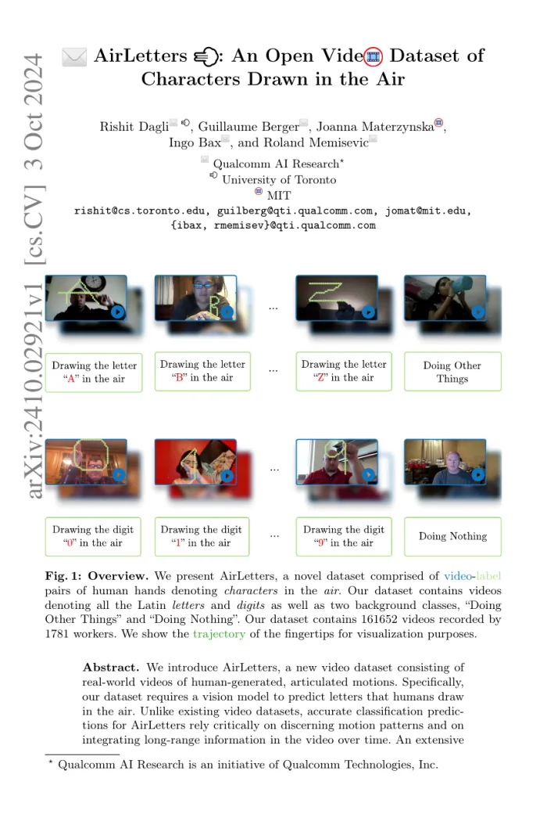

AirLetters is a new video dataset consisting of real-world videos of human-generated, articulated motions.
Abstract
Motivation
- All models fall well below humans: 71.20% vs. 96.67%
- Vision-language models score under 8%
- Needs fine motion and long-range temporal information
- More frames, much higher accuracy
- Digits 0, 1 and 2 are easily confused
- Contrast classes are easy to recognize
Dataset Contents
36 primary classes
- A
- B
- C
- D
- E
- F
- G
- H
- I
- J
- K
- L
- M
- N
- O
- P
- Q
- R
- S
- T
- U
- V
- W
- X
- Y
- Z
- 0
- 1
- 2
- 3
- 4
- 5
- 6
- 7
- 8
- 9
2 contrast classes
- Doing Nothing · sitting or standing still
- Doing Other Things · adjusting position, random hand movements
Our dataset has videos with precise articulated motion across many different frames instead of many other dataset which only need 1 frame or 2-4 frames to understand the video.
Choosing a few key frames in our dataset does not help in understanding the video, and the entire video needs to be considered to understand the motion.
Scaling Training Frames. Performance of models across different numbers of training frames. The Pareto Frontier is represented by a black curve. Note that this dataset requires models to attend through the entire video to perform well, and increasing the number of frames that models attend to significantly increases their performance.
Dataset Statistics
- 128,745 train
- 16,480 validation
- 16,427 test
- 40,142,100 frames
- 30 fps
- Median 4.04k videos per class
- Median 40 videos per actor
Leaderboard
Classification accuracy of image models, video models, and (large) vision language models on AirLetters. Click column headers to sort.
Show tableHide table
| Method | Type | Top-1 Accuracy ↑ |
|---|---|---|
| ViT-B/16 | Image | 7.49 |
| MaxViT-T | Image | 7.56 |
| ResNet-200 | Image | 11.44 |
| ResNeXt-101 | Image | 13.09 |
| SE-ResNeXt-26 | Image | 13.29 |
| ResNet-50 | Image | 13.87 |
| VideoMAE (16) | Video | 57.96 |
| ResNet-101 + LSTM | Video | 58.45 |
| ResNet-50 + LSTM | Video | 63.24 |
| ResNeXt-152 3D | Video | 65.77 |
| Strided Inflated EfficientNet 3D | Video | 65.97 |
| ResNeXt-50 3D | Video | 66.54 |
| ResNeXt-101 3D | Video | 69.74 |
| ResNeXt-200 3D | Video | 71.20 |
| Video-LLaVA (w/o contrast class) | VLM | 2.53 |
| VideoLLaMA2 (w/o contrast class) | VLM | 2.47 |
| Video-LLaVA | VLM | 7.29 |
| VideoLLaMA2 | VLM | 7.58 |
| Human Performance (10 videos/class) | Human | 96.67 |
Overall results of different models on the AirLetters leaderboard. The best-performing model is in-bold. Note that the task is straightforward for humans but challenging for existing models.
Paper

AirLetters: An Open Video Dataset of Characters Drawn in the Air
Qualcomm AI Research, University of Toronto, MIT
Citation
@InProceedings{dagliairletters,
author="Dagli, Rishit and Berger, Guillaume and Materzynska, Joanna and Bax, Ingo and Memisevic, Roland",
title="AirLetters: An Open Video Dataset of Characters Drawn in the Air",
booktitle="Computer Vision -- ECCV 2024 Workshops",
year="2025",
publisher="Springer Nature Switzerland",
address="Cham",
pages="1--32",
isbn="978-3-031-91578-9"
}